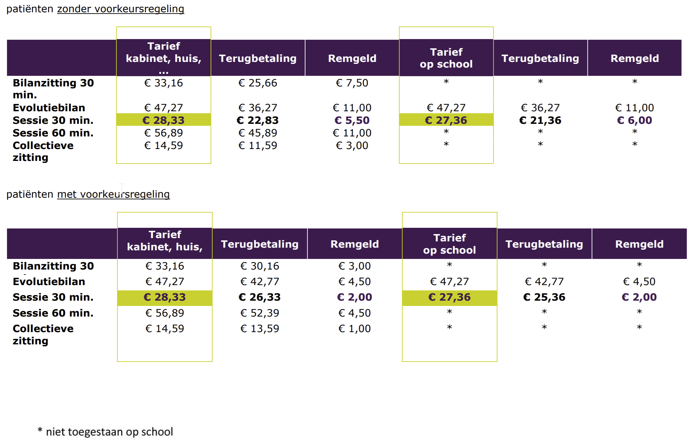

Aanmelding en tarieven
Aanmelding
Als wij u kunnen helpen met een probleem is het belangrijk dat u volgende stappen onderneemt:
- Huisarts
Allereerst gaat u langs bij uw huisarts (dit mag ook de specialist in het ziekenhuis zijn). Hij of zij kan dan een logopedisch onderzoek voorschrijven. Breng dit voorschrift mee bij het eerste gesprek.
- Logopedisch onderzoek
U belt ons op om een afspraak te maken om dit onderzoek te laten doorgaan. Er volgt een intakegesprek en een testing. Daarna maakt de logopediste hiervan een verslag op en bespreekt dit met u. Ze vult het tweede luik van het voorschrift in en bezorgt u dit samen met het verslag.
- Specialist
Met dit verslag trekt u naar de specialist. Hij/zij zal u een bepaald aantal sessies voorschrijven. U belt naar de logopediste en brengt het voorschrift terug mee naar uw eerste afspraak.
- Mutualiteit
De logopediste stuurt alle nodige formulieren op naar uw mutualiteit. Na enkele weken ontvangen u en de logopediste de goedkeuring. De logopedische therapie is intussen gestart.
Tarieven
Wij zijn geconventioneerde logopedisten. Dit wil zeggen dat wij ons aan de wettelijk bepaalde tarieven houden. Zo geniet u ook van de meeste terugbetaling van uw mutualiteit.
Per stoornis worden een verschillend aantal sessies terugbetaald. Vraag hierover meer informatie aan uw logopediste.
